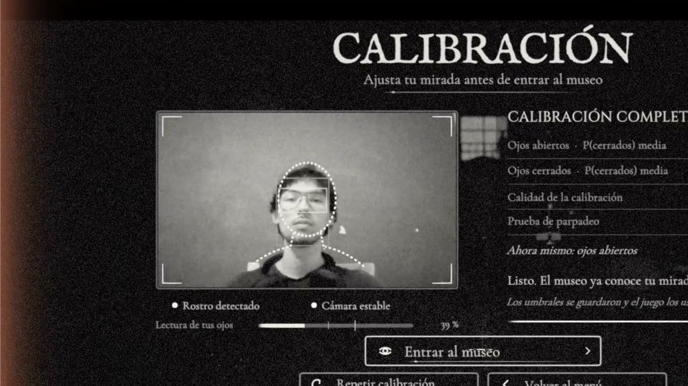
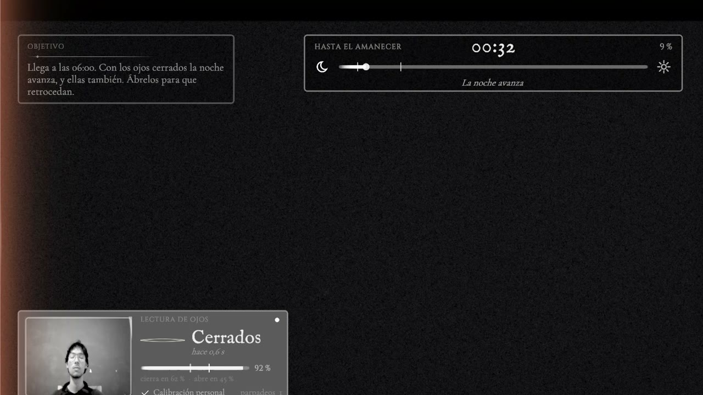

Procesamiento Digital de Imágenes
Clic o → para avanzar
El problema · Expresión humana en el arte y la cultura
Del espectador
al participante
En un museo de mitos colombianos el visitante solo mira: no tiene forma de intervenir en la obra.
Leer un gesto humano —abrir o cerrar los ojos— en cada cuadro de una cámara web, sin importar dónde esté la persona.
Objetivos
Lo que nos propusimos
- Localizar el rostro en el cuadro completo de la cámara.
- Clasificar el estado de los ojos con una red propia.
- Estabilizar la decisión en el tiempo y adaptarla a cada persona.
- Evaluar con métricas y con pruebas de una persona real.
- Integrar todo en una interfaz: el propio juego.
Arquitectura del sistema
De la cámara al juego
de la webcam
del rostro
gris 80 × 160
cerrados)
JSON por cuadro
y lo muestra
Python · OpenCV · ONNX Runtime → UDP local → Unity
1 · Los datos
fotos con 1047 rostros y ojos marcados a mano, con ayuda de MediaPipe.
2 · Detección de rostro y ojos
Dos detectores
Faster R-CNN
encierra cada rostro y cada ojo en una caja.
Mask R-CNN
además dibuja su silueta exacta.
rostros y ojos encontrados en las fotos de prueba
3 · Segmentación del rostro
de índice Dice entre la máscara de la U-Net y el rostro real.
80 fotos propias · 9 personas
4 · El procesamiento, paso a paso
Fotos CC0 (Wikimedia Commons): Sandy Huffaker · Toa Heftiba · Priscilla Du Preez
5 · Clasificación del estado ocular
de exactitud de la CNN que decide si los ojos están abiertos o cerrados.
6 · De la probabilidad a una decisión
Calibración e histéresis
Se mide P(cerrados) con los ojos abiertos y cerrados; los umbrales salen de sus percentiles.
Cerrar exige más que abrir: un parpadeo suelto o un cuadro ruidoso no cambian el estado.
7 · Prueba con una persona real
Calibración en vivo
| Lecturas | P(cerrados) media | |
|---|---|---|
| Ojos abiertos | 48 | 0,20 |
| Ojos cerrados | 50 | 0,94 |
| Umbral para cerrar · abrir | 0,62 · 0,45 | |
| Prueba de parpadeo | 2 de 2 |
video de un integrante leído en tiempo real por el detector · calidad «Excelente»
8 · Limitaciones y robustez
Cuando la imagen no es clara
Conclusiones
Lo que aprendimos
- Separar segmentación y clasificación permite saber en qué etapa falla el sistema.
- La calibración por persona pesa tanto como la exactitud de la red.
- Un gesto mínimo, leído con PDI, basta para que el público participe en una obra.
Mejoras: más personas y condiciones de luz · menor latencia · más gestos que solo abrir y cerrar
El proyecto
Cuando nadie mira
Un museo de noche: la Llorona, el Mohán y la Madremonte solo se mueven cuando cierras los ojos.
La interfaz es el juego


Trailer
Procesamiento Digital de Imágenes · Universidad Autónoma de Occidente · 2026
Jugar